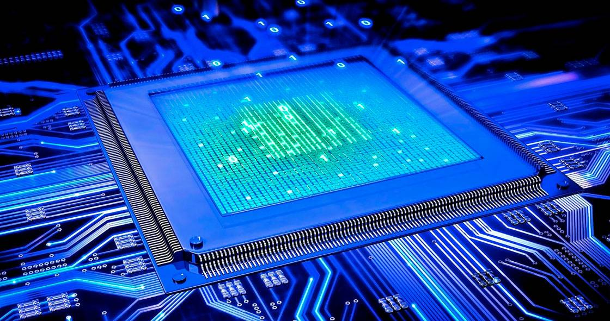
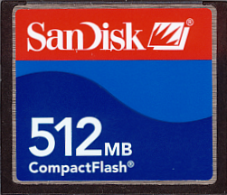
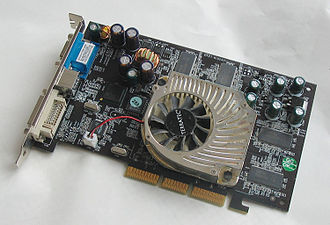

Процессор
Центральный процессор (ЦП; также центральное процессорное устройство — ЦПУ; центральное обрабатывающее устройство, часто просто процессор) — электронный блок либо интегральная схема, исполняющая машинные инструкции (код программ), главная часть аппаратного обеспечения компьютера или программируемого логического контроллера. Иногда этот компонент называют просто процессором.
Изначально термин центральное процессорное устройство описывал специализированную систему элементов, предназначенных для понимания и выполнения машинного кода компьютерных программ, а не только фиксированных логических операций. Начало применения термина и его аббревиатуры по отношению к компьютерным системам было положено в 1960-е годы. Устройство, архитектура и реализация процессоров с тех пор неоднократно менялись. В современных вычислительных системах все функции центрального процессора обычно выполняет одна микросхема высокой степени интеграции — микропроцессор
Карта памяти
Карта памяти (иногда неправильно флеш-карта) — компактное электронное запоминающее устройство, используемое для хранения цифровой информации. Современные карты памяти изготавливаются на основе флеш-памяти, хотя принципиально могут использоваться и другие технологии. Карты памяти широко используются в электронных устройствах, включая цифровые фотоаппараты, сотовые телефоны, ноутбуки, портативные цифровые аудиопроигрыватели.
Видеокарта
Видеокарта (также видеоадаптер, видеоплата, графический адаптер, графическая плата, графическая карта, графический ускоритель) — устройство, преобразующее графический образ, хранящийся как содержимое памяти компьютера (или самого адаптера), в форму, пригодную для дальнейшего вывода на экран монитора. Обычно видеокарта выполнена в виде печатной платы (плата расширения) и вставляется в слот расширения материнской платы - универсальный, либо специализированный (AGP, PCI Express).
Также широко распространены и расположенные на системной плате видеокарты — как в виде дискретного отдельного чипа GPU, так и в качестве составляющей части северного моста чипсета или ЦПУ; в случае ЦПУ, встроенный (интегрированный) GPU, строго говоря, не может быть назван видеокартой.
Видеокарты не ограничиваются простым выводом изображения. Они имеют встроенный графический процессор, который может производить дополнительную обработку, снимая эту задачу с центрального процессора компьютера. Например, видеокарты Nvidia и AMD (ATi) осуществляют рендеринг графического конвейера OpenGL, DirectX и Vulkan на аппаратном уровне.
Также имеет место тенденция использовать вычислительные возможности графического процессора для решения неграфических задач (например, добычи криптовалюты или параллельных вычислений, таких как BOINC).